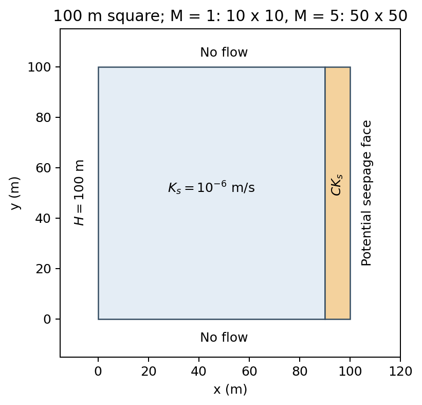
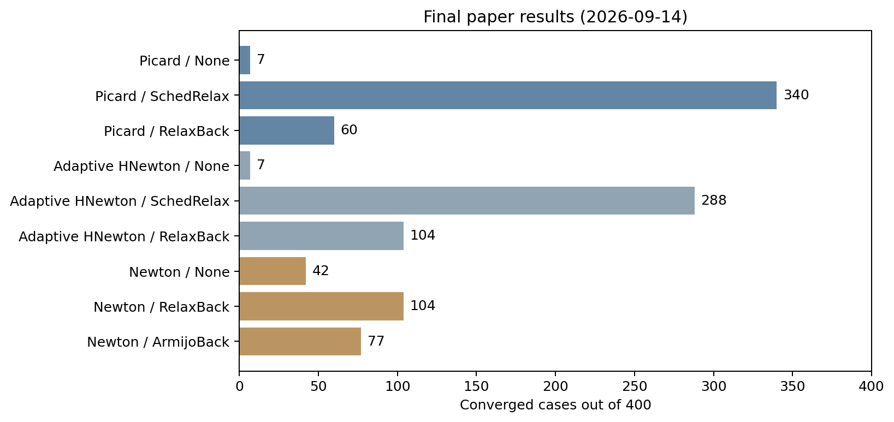
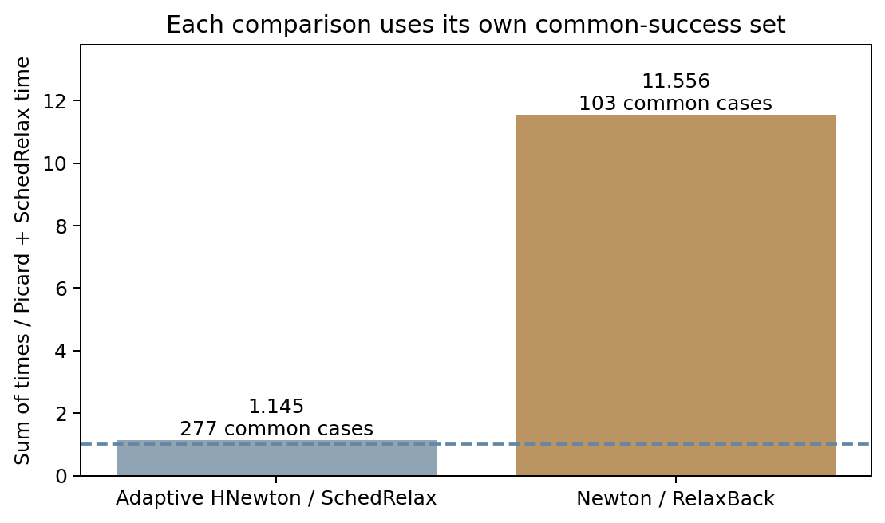
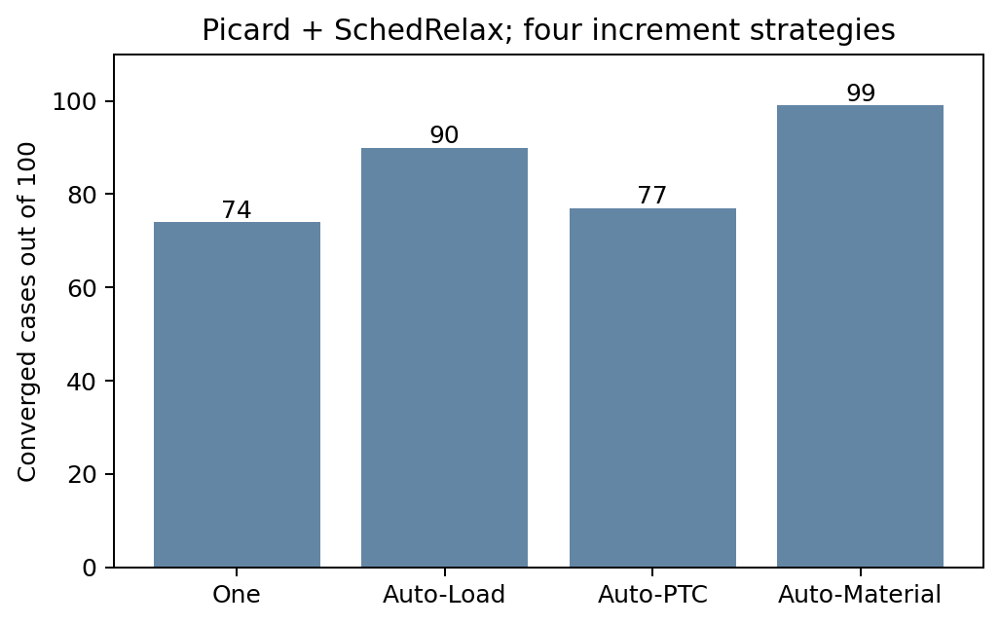
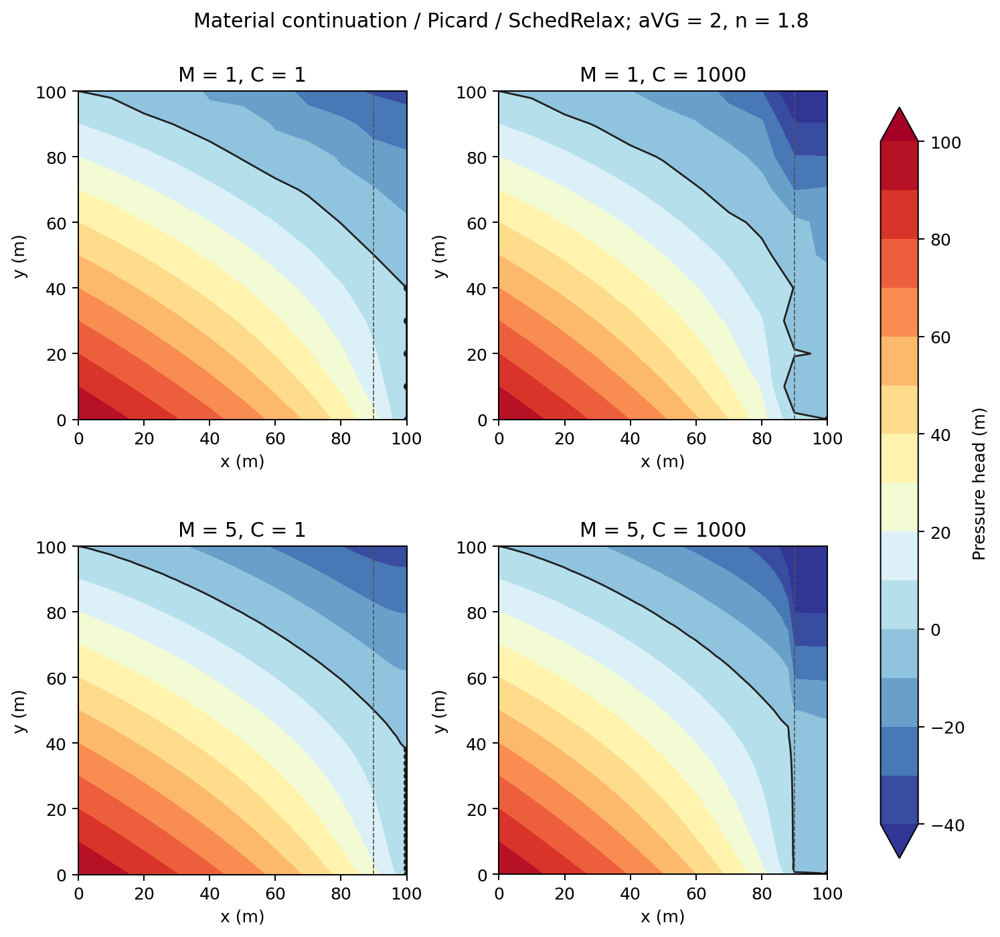

C.4 정상 불포화 침투해석의 수렴성과 계산효율
적용 사례. 정상 불포화 침투 문제에서 접선 처리, 스텝 크기 제어 및 정상해에 접근하는 증분 방식을 비교한다. 조정래·김동찬·이두한의 「정상 불포화 침투해석을 위한 비선형 해법의 수렴성과 계산효율」 최종 원고와 2026-09-14 통합 결과를 기준으로 한다. 실험 비교 사례는 아니며, 아래 전수시험 수치는 당시 실행파일과 장비에서 얻은 논문 결과이다.
모델과 재료
Paniconi and Putti(1994)의 문제를 바탕으로 폭과 높이가 각각 100 m인 정사각형을 모델링한다. 좌측에는 총수두 100 m를 적용하고, 상·하부는 무유량 경계, 우측은 잠재 침윤면(PSF)으로 둔다. 우측 10 m 영역은 주영역과 같은 수분특성곡선을 사용하고 포화투수계수만 C배로 지정한다.

Figure C.4.1 Geometry and Boundary Conditions of the Steady Seepage Benchmark| 항목 | 조건 |
|---|---|
| 요소 | SC2D4, 두께 1 m |
| 요소망 계수 M | 1: \(10\times10\) 요소, 5: \(50\times50\) 요소 |
| 포화투수계수비 C | 1, 1000 |
| 주영역 포화투수계수 | \(10^{-6}\) m/s |
| 물의 단위중량 | 9810 N/m³ |
| 잔류·포화 함수비 | 0.05, 0.40 |
| VGM \(\alpha\) | 0.5, 1, 2, 5, 10 m⁻¹ |
| VGM n | 1.3, 1.5, 1.8, 2.2, 2.8 |
입력의 <aVG>는 수두 기준 \(\alpha\)이다. 압력 기준 재료에는 <aVG>/9810으로 지정한다. AirEntry=Relative,0.05는 \(n\le2\)에서 적용되고 \(n>2\)에서는 원 VGM 관계를 사용한다. 두 영역에서 M과 C를 바꿔도 동일한 형상과 경계조건을 유지한다. 저류계수는 재료에 지정되어 있지만 정상상태 평형에는 저류항이 없다.
비교 조건
2개 요소망, 2개 투수계수비와 25개 VGM 조합으로 100개 모델 조건을 만든다. 각 조건에 9개 접선–스텝 크기 제어 조합과 4개 증분 방식을 적용하여 총 3,600건을 비교했다.
| 접선 처리 | 스텝 크기 제어 |
|---|---|
| Picard | None, SchedRelax, RelaxBack |
| 적응형 HNewton | None, SchedRelax, RelaxBack |
| Newton | None, RelaxBack, ArmijoBack |
적응형 HNewton의 입력은 HNewton,0,0.2,0.3,0.1,1000이다. SchedRelax는 0.01,0.65,10, RelaxBack은 35,1E-9,1,0.5를 사용한다. Newton의 ArmijoBack은 당시 기본 설정을 사용했다.
| 방식 | 정상상태 Step dataline |
|---|---|
| One: 단일 증분 직접해석 | Auto,1,1,1,1,1000,Path=Load,OutFreq=0 |
| Auto-Load: 하중 연속화 | Auto,0.1,1,0.01,0.1,1000,Path=Load,OutFreq=0 |
| Auto-PTC: 의사시간 연속화 | Auto,0.1,1,0.01,0.1,1000,Path=PTC,OutFreq=0 |
| Auto-Material: 재료 연속화 | Auto,0.1,1,0.01,0.1,1000,Path=Material,OutFreq=0 |
정상상태의 진행값은 물리시간이 아니다. 모든 방식이 최종 진행값 1에서 같은 정상상태 문제를 풀도록 구성한다. One은 최소·최대 진행 증분을 1로 고정하여 작은 증분으로 후퇴하지 않는다.
논문 전수시험은 Release 실행파일과 PARDISO를 사용해 4개 프로세스, 프로세스당 4개 스레드로 수행했다. 사례당 실행시간 상한은 180초, 증분당 평형반복 상한은 1,000회이다. 압력 보정량 허용값은 10 Pa로 고정하고, 초기 100회는 수렴추세 판정을 유예했다. 유량평형의 수용조건은 다음과 같다.
PSF가 2-cycle을 보이면 전역 유량평형에 더해 절점별 유입량과 양압 위반을 검사한다. 2026-09-14에는 이 검사와 관련된 10건을 재실행하여 최종 원표에 반영했다.
논문 기준 결과
3,600건 중 성공은 1,029건, 일반 실패는 2,456건, 시간초과는 115건이다. 각 접선–스텝 크기 제어 조합에는 동일한 400개 시도가 포함된다.
| 접선 처리 | None |
SchedRelax |
RelaxBack |
ArmijoBack |
|---|---|---|---|---|
| Picard | 7 | 340 | 60 | — |
| 적응형 HNewton | 7 | 288 | 104 | — |
| Newton | 42 | — | 104 | 77 |

Figure C.4.2 Converged Cases for the Nine Tangent and Step-Control Combinations계산시간은 Picard+SchedRelax과 비교 대상이 **함께 수렴한 조건**에서 비교한다. 적응형 HNewton+SchedRelax은 공통 277건에서 누적시간비 1.145, Newton+RelaxBack은 공통 103건에서 11.556이다. 두 비교의 공통 조건 집합은 서로 다르며, 실패·시간초과를 포함한 전체 실행시간의 비가 아니다.

Figure C.4.3 Cumulative Wall-Time Ratios on the Common-Success SetsPicard+SchedRelax에서 각 증분 방식의 성공 수는 다음과 같다.
| One | Auto-Load | Auto-PTC | Auto-Material |
|---|---|---|---|
| 74/100 | 90/100 | 77/100 | 99/100 |

Figure C.4.4 Coverage of the Four Increment Strategies with Picard and Scheduled Relaxation공통 수렴한 Picard+SchedRelax의 448개 경로쌍에서 PSF 활성집합이 일치했다. 압력장·통과유량 비교의 상세 수치는 Result/results-endpoint-pair-summary.csv와 Result/results-endpoint-pair-outliers.csv에 보존한다. 이 CSV는 다른 접선 처리의 비교도 포함하므로, 논문 비교에는 TanReg=0, StepCtrl=SchedRelax인 행을 사용한다. 작은 차이가 있다는 사실과 다른 정상해에 도달했다는 판단을 구분한다.
대표 최종 압력장
<aVG>=2, <n>=1.8에서 Auto-Material과 Picard+SchedRelax을 사용한 네 \((M,C)\) 조건의 결과이다. 검은 등치선은 압력수두 0, 우측의 점은 압력고정 PSF 절점이다. 이 결과는 압력 기준 재료식을 사용해 구한 최종 절점값에서 직접 그렸다.

Figure C.4.5 Representative Pressure-Head Fields and Active Seepage-Face Nodes본 문제 계열에서는 Picard+SchedRelax을 기본 비교 조합으로 사용하고, 수렴이 어려운 조건에는 Material continuation을 적용하는 것이 효과적이었다. 이 결론은 시험한 재료·요소망·경계조건의 범위에 해당한다.
입력 파일과 실행
배포 폴더의 Examples/C-Steady-Unsaturated-Seepage/에 입력이 있다. 입력을 별도 작업 폴더로 복사한 뒤 hfAnalyzer를 실행한다. hfAnalyzer 실행 안내에 따라 PATH를 설정한다.
| 방식 | Picard | 적응형 HNewton | Newton |
|---|---|---|---|
| One | one-picard.inp |
one-hnewton.inp |
one-newton.inp |
| Auto-Load | load-picard.inp |
load-hnewton.inp |
load-newton.inp |
| Auto-PTC | ptc-picard.inp |
ptc-hnewton.inp |
ptc-newton.inp |
| Auto-Material | material-picard.inp |
material-hnewton.inp |
material-newton.inp |
12개 입력은 모두 독립적으로 실행된다. 기본 조건은 <M>=1, <C>=1, <aVG>=0.5, <n>=1.5이다. Picard와 HNewton의 기본 스텝 크기 제어는 SchedRelax, Newton은 RelaxBack이다. 대표 최종 압력장의 조건은 파라미터로 지정한다.
hfAnalyzer material-picard.inp
hfAnalyzer material-picard.inp -p "<M>=5,<C>=1000,<aVG>=2,<n>=1.8" -o representative-M5-C1000
hfAnalyzer load-newton.inp -p "<StepCtrl>={ArmijoBack}"
다른 재료·해법을 비교할 때는 실행별 작업 폴더를 구분한다. *Print는 입력별 이름의 절점 결과 CSV를 작업 폴더에 쓰므로, 같은 입력을 같은 폴더에서 다시 실행하면 이전 CSV를 덮어쓴다. -o는 HDB 등의 결과 이름을 바꾸며 *Print, File=...의 이름은 바꾸지 않는다.
보존 결과
예제 폴더 최상위의 coseik-steady-seepage-final.docx는 비교 기준인 최종 논문 원고이다.
Result/seepage-final-results.xlsx에는 전체 집계, 3,600건 원표, 경로쌍 비교 및 대표 네 조건의 절점 결과가 있다. Result/case-results.csv는 원래 통합 원표를 그대로 보존한 파일이며, metadata.json에는 실행 출처와 해시가 있다. Result/grids/의 144개 SVG는 조건별 25재료의 성공·실패·시간초과를 보여준다.
예제에는 hdb/rst/chk/log와 전체 원시 압력장 파일을 보관하지 않는다. 원표의 field_file과 output 열은 당시 원자료의 식별 경로이며 현재 파일 링크가 아니다. 대표 압력장은 representative-fields.csv로 재생성할 수 있고, 전체 경로쌍 압력장 비교를 새로 계산하려면 해석을 다시 수행해야 한다. 현재 실행파일로 얻은 결과와 실행시간은 논문의 보존 결과와 구분해서 비교한다.
참고문헌
- 조정래·김동찬·이두한, 「정상 불포화 침투해석을 위한 비선형 해법의 수렴성과 계산효율」, 최종 원고. 보존 결과 기준일: 2026-09-14.
- Paniconi, C., Putti, M. (1994), A Comparison of Picard and Newton Iteration in the Numerical Solution of Multidimensional Variably Saturated Flow Problems, Water Resources Research, 30(12), 3357–3374.